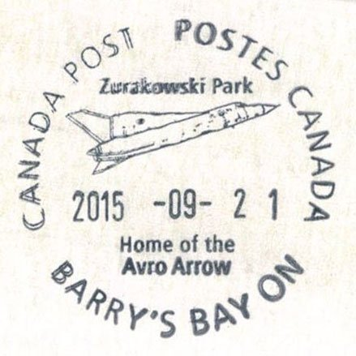

Barry's Bay PO pictorial cancel
Zurakowski Park – Home of the Avro Arrow · Old
- Status
- Expired
- Run dates
- ? to ?
- Design
- "Zurakowski Park / Home of the Avro Arrow"; aircraft
- Ink colour
- Black
- Designer
- Unknown
- Post office
- Barry's Bay PO
19557 Opeongo Line
Barry's Bay, ON
K0J 1B1 - Subjects
- aircraft, transportation, aviation, military
This cancel is retired, so the post office can no longer apply it. Covers with it turn up from dealers and other collectors.
 Barry's Bay PONew
Barry's Bay PONew Gravenhurst STN MainOld
Gravenhurst STN MainOld Gravenhurst STN MainNew
Gravenhurst STN MainNew